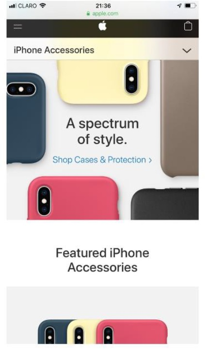

Alignment
The Church of JesusChrist of latter day saints
https://www.churchofjesuschrist.org/
In this website we find the principle of alignment.
I like the way how the scriptures are aligned,
ordered and organized that helps to the observer to have a clear view
and read easily and not only images that are organized but as well the content.
Proximity
Apple
https://www.apple.com/

I considered in this page is shown the principle for Proximity
since the images are related to cases for iphones not only
the first images but the ones below as well, because proximity
describes to the spacing and balance of images and help to illustrate
the relationship among objects.